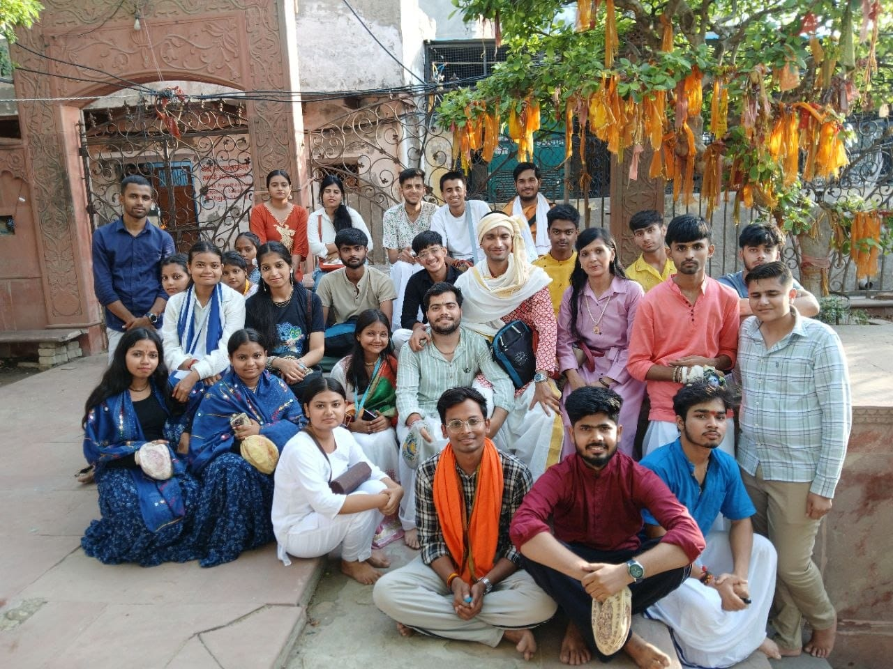
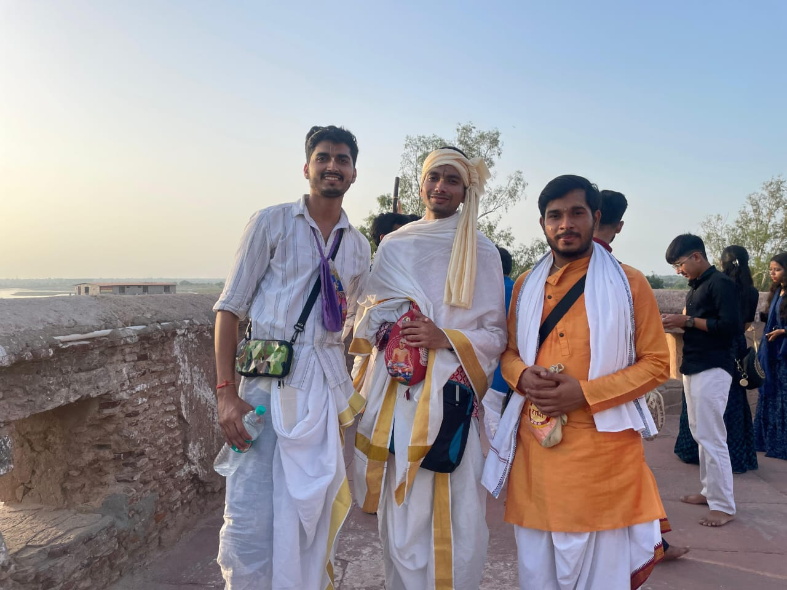
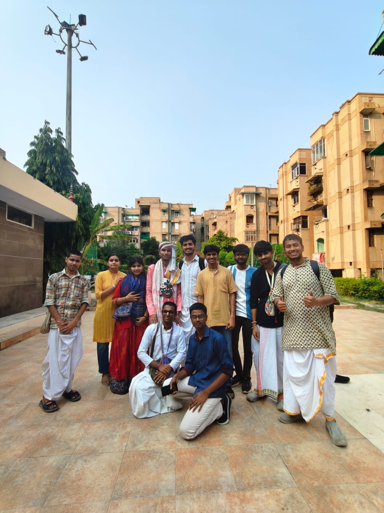
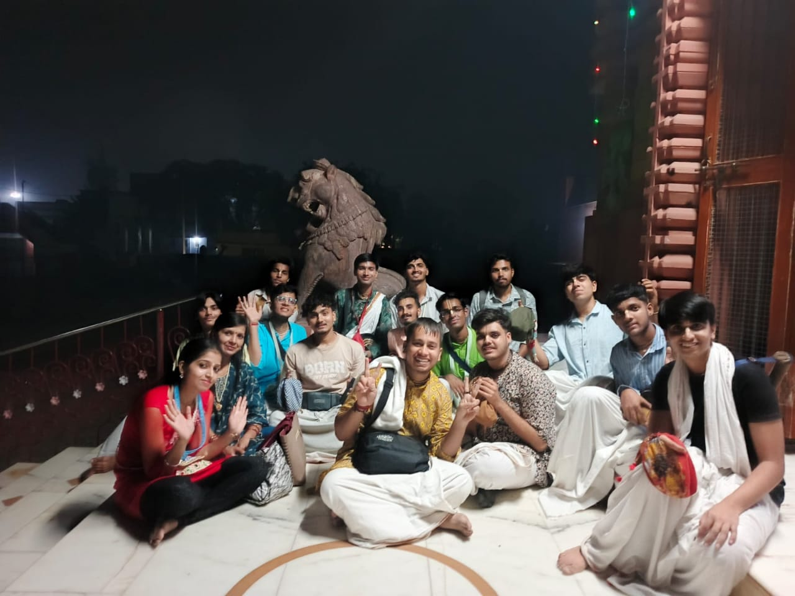

Moments together
Raman Parikar Gallery
Real moments from our community, gatherings, journeys and spiritual association.




“Śāstra • Bhakti • Seva • Saṅga”
Growing together in spiritual association
Real moments from our community, gatherings, journeys and spiritual association.




“Śāstra • Bhakti • Seva • Saṅga”
Growing together in spiritual association